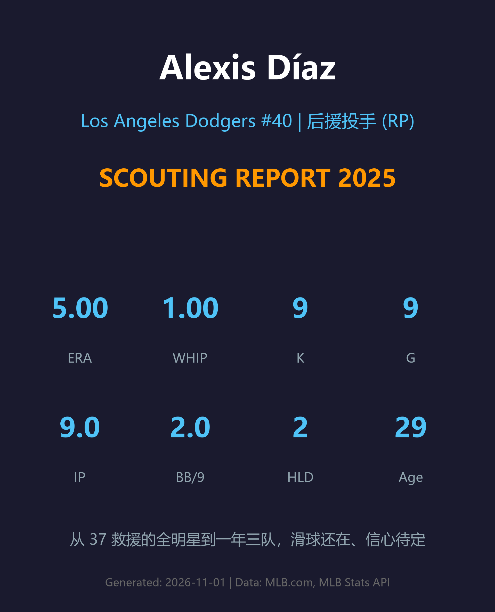
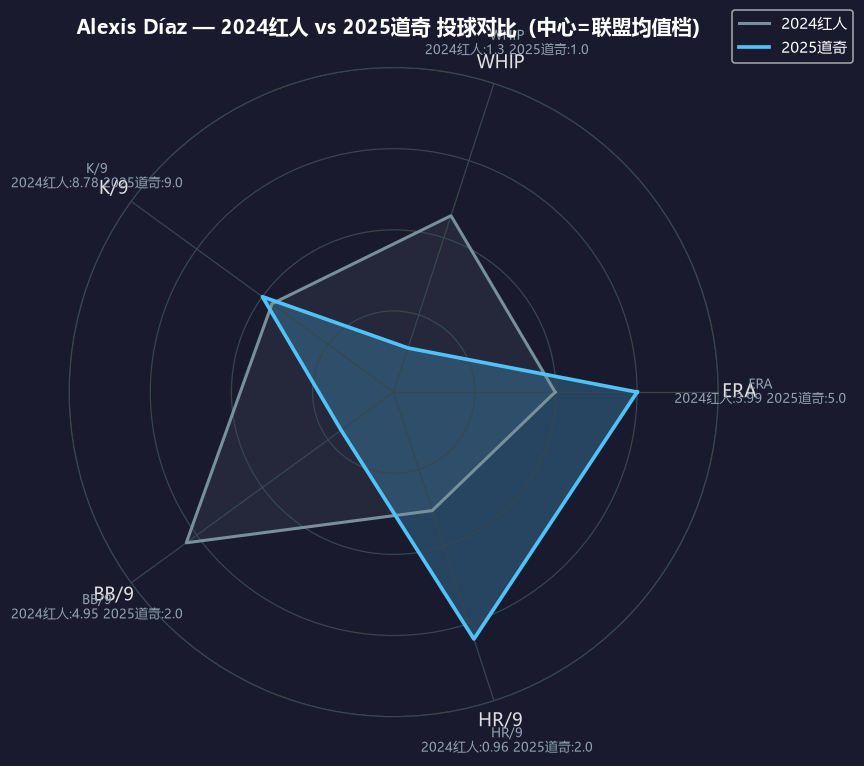
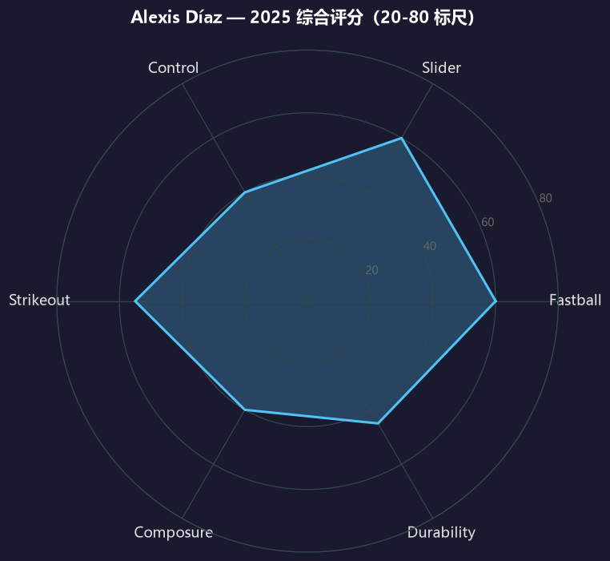

Los Angeles Dodgers #40 | 后援投手 | 右投 | 从 37 救援的全明星到一年三队，滑球还在、信心待定

Alexis Díaz 的 2025 年是一场信心危机的巡回演出：红人开季 6 场、自责分率 12.00，5 月 29 日被交易到道奇；在洛杉矶的 9 场、自责分率 5.00；9 月 4 日被指定让渡，勇士捡走后再投 3 场 10.13。一年三队，从 2023 年 37 救援的国联全明星到 waiver wire 常客，只用了两年。
但这份报告最重要的数字藏在他的道奇段 WHIP 里：1.00。9 局仅 7 支安打、2 次保送——他的控球和触球在道奇时期其实是明显回升的，拖垮他的是 2 支全垒打（HR/9 2.00）和时机：两支轰都出现在高杠杆时刻，直接改写了他的 ERA 与命运。滑球依旧锋利（40.4% 使用率、87.5 mph），三振率回到 9.0——东西都在，丢的是 ninth-inning 的信心。
从 2025 年 11 月的视角看，Díaz 是市场上最典型的高风险高回报案例：29 岁、刚走完仲裁、近两年的滑坡轨迹吓退了多数买家，但 2022-24 年 165 场、自责分率 2.91 的终结者底子仍在。勇士用一张 waiver claim 就拿到了一张头奖彩票——这张彩票值多少，取决于他的Slider能不能重新统治第九局。
红人处子赛季 59 场、自责分率 1.84、10 次救援成功、WHIP 0.96——以无名新秀身份成为大联盟最 dominating 的后援之一，新秀王票选名列前茅。
71 场、3.07 自责分率、37 次救援成功，入选国联全明星队——他与哥哥 Edwin 成为大联盟史上罕见的「兄弟救援组」，各自镇守一个联盟的第九局。
5 月 29 日加盟道奇后，与哥哥 Edwin Díaz 短暂同队两个月——大联盟历史上为数不多的兄弟同队打同一座牛棚的章节，即便短暂也足以写进家族故事。
以下为道奇段数据（2025-05-29 自红人交易加盟、2025-09-04 被指定让渡）：

| 赛季 | 球队 | G | ERA | WHIP | IP | SO | BB | K/9 | BB/9 |
|---|---|---|---|---|---|---|---|---|---|
| 2024（红人） | CIN | 60 | 3.99 | 1.30 | 56.1 | 55 | 31 | 8.78 | 4.95 |
| 2025（道奇段） | LAD | 9 | 5.00 | 1.00 | 9.0 | 9 | 2 | 9.00 | 2.00 |
| 2025（红人段） | CIN | 6 | 12.00 | 2.17 | 6.0 | 3 | 5 | 4.50 | 7.50 |
| 2025（勇士段） | ATL | 3 | 10.13 | 1.88 | 2.2 | 5 | 5 | 16.88 | 16.88 |
把 2025 年三段放在一起看，故事比任何单段都清楚：红人段他是彻底迷失的（保送率 7.50）；道奇段他的触球和控球明显修复（WHIP 1.00、BB/9 2.00，三振率回升），只是 2 支全垒打把 ERA 钉在 5.00；勇士段样本太小但保送问题重现。道奇段是全年唯一一段「身体与机制都在线」的时期——这解释了为什么道奇愿意用 Mike Villani 去换他，也解释了为什么 DFA 之后立刻有球队捡。
2025 赛季真实配球数据（MLB Stats API pitchArsenal，全季三队汇总）：
使用率近六成的配球地基，球速不算顶级但进垒角度佳，与滑球形成高效的「直上直下+横扫」二元结构。
他的成名武器，大幅横移、出手点与四缝线几乎一致——2022 年 1.84 自责分率的全部秘密。这颗球 2025 年的形状并未明显退化，问题出在「什么时候敢投它」。
球探报告最忌讳被 ERA 牵着走。Díaz 的 2025 年三段曲线里，道奇段 1.00 的 WHIP 与 9.0 的 K/9 是「东西还在」的直接证据：触球质量、控球、三振能力全部在线，只有全垒打时机和场面运气站在对面。2022-24 三年 165 场 2.91 的底子不会因为一年 18 局的颠簸消失——真正消失的是他在第九局连续救援失败后的心理节奏，那种「不敢出手」的犹豫，数据表上看不见。
道奇 5 月 29 日出手换他，带着明确的「修复项目」属性：他的滑球机制与哥哥 Edwin 一脉相承，而道奇当年恰好拥有 Edwin——七、八月间，棒球史上罕见的「兄弟同牛棚」在洛杉矶出现。这段安排没能把 Alexis 完全修好（9 月 4 日 DFA），但 9 局 1.00 WHIP 的修复痕迹，让勇士在 waiver 上毫不犹豫地按下了认领键。
从 11 月的视角看，勇士用零成本拿到的这张彩票有三重价值：终结者保险（2022-23 证明过他能在第九局）、右手长中继（滑球对右打者的压制依旧）、以及「远离聚光灯重建信心」的环境。如果 2026 年他能把 HR/9 压回 1 以下，勇士会看起来像捡到了联盟最划算的交易截止日礼物——尽管这份礼物是在 9 月 waiver 线上捡的。

滑球未死的落魄全明星，信心是唯一变量
C+~B- 级 / 反弹型后援（信心变量）
道奇 2025 季后赛夺冠之路：外卡 2-0 红人 → NLDS 3-1 费城人 → NLCS 4-0 酿酒人 → 世界大赛 4-3 多伦多蓝鸟。
Díaz 与这条夺冠路无缘：9 月 4 日他被道奇 DFA，9 月 7 日被勇士认领——等他重新站上投手板时，穿的是勇士球衣。道奇夺冠之夜，他的哥哥 Edwin 在洛杉矶的庆祝人群里；他自己在亚特兰大结束了职业生涯最颠簸的一年。
Díaz 的 2026 年从勇士牛棚的边缘角色开始重建：先赢回低杠杆的信任，再谈第九局。勇士的环境对他有利——没有终结者压力、有冠军级教练组、以及一座不急于兑现的城市。滑球还在，故事就还有下一章。
理想剧本：上半年找回滑球统治力，季末重返终结者轮换
现实基准：第六七局中继，用一整个完整健康季修复数据
上行惊喜：复制 2022-23 形态，勇士白捡一个全明星终结者
Alexis Díaz 来自波多黎各的乌马考，与他哥哥 Edwin Díaz 走上几乎相同的道路：拉丁美洲的发展体系、火球与滑球的二元配球、以及从无名之辈到终结者的快速爬升。2022 年 4 月 8 日他在辛辛那提红人登上大联盟，处子赛季就投出 1.84 自责分率、10 次救援——比哥哥当年的崛起还要凶猛。
2023 年是他封神的一年：71 场、37 救援、入选国联全明星。那一季，他与 Edwin 分别镇守辛辛那提和纽约的第九局，成为大联盟史上又一对「兄弟救援组」。但 2024 年开始滑坡（3.99、28 救援成功率下降），2025 年开季彻底崩盘——红人只给了他 6 场就决定放弃。
道奇在 5 月 29 日给了他一次机会，也给了他一段特殊的时光：与哥哥同队两个月。2025 年 11 月的 Alexis Díaz 身披勇士球衣，手里握着一颗仍在的滑球和一个待重建的职业生涯。他哥哥的故事告诉过他：第九局的大门从来不是关死的，只要你还投得进好球带。